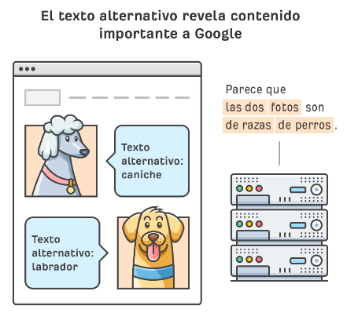
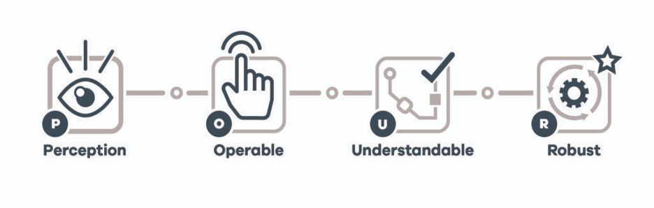

La accesibilidad web hace referencia a que cualquier persona sin importan discapacidades, edad, entre otros puedan acceder y disfrutar de estos contenidos sin tener restricciones por sus condiciones especiales, cuando esto se cumple se podría decir que el sitio fue diseñado y codificado propiamente.
Es importante mencionar que un concepto como el de la accesibilidad web permite cambiar radicalmente el impacto de por ejemplo una enfermedad, ya que se intenta eliminar las barreras y permitir a todos los usuarios tener una buena experiencia.
Cabe recalcar que la accesibilidad web no solo engloba a personas con discapacidades, sino que también pueden ser limitantes de hardware, como por ejemplo acceder al sitio desde un móvil, relojes inteligentes, televisores inteligentes, entre otros.
Cuando un sitio se desarrolla propiamente estamos permitiendo una inclusión para todos los usuarios, lo que puede permitir una mayor audiencia. Cabe recalcar que en algunos países la accesibilidad web es un tema de obligación legal.
Para describir los principios en accesibilidad web se suele utilizar el acrónimo proveniente del inglés POUR, que hace referencia a Perceivable, Operable, Understandable and Robust, que en español sería Perceptible, Operable, Comprensible y Robusto, a continuación se comentará un poco de ellos:
Perceptible: este término hace referencia a que la información debe ser presentada de manera que los usuario pueda entenderla y percibirla correctamente, por ejemplo, se puede utilizar alternativas de texto para imágenes o contenido no textual.
Operable: este concepto se puede interpretar como el poder de navegar y operar la interfaz del sitio web con facilidad, podemos utilizar el ejemplo de que el sitio se pueda manejar correctamente tanto con el ratón como con atajos en el teclado.
Comprensible: el sitio web debe ser claro y seguir un formato para que el usuario entienda correctamente como funciona el sitio y además poder predecir las siguientes pantallas.
Robusto: el contenido debe ser lo suficientemente robusto como para ser interpretado por una amplia gama de dispositivos y tecnologías, incluidas herramientas de asistencia como lectores de pantalla.